/* zanele-muholi - proofs */
11 plates. Deterministic overlays rendered by the composition-analysis skill.
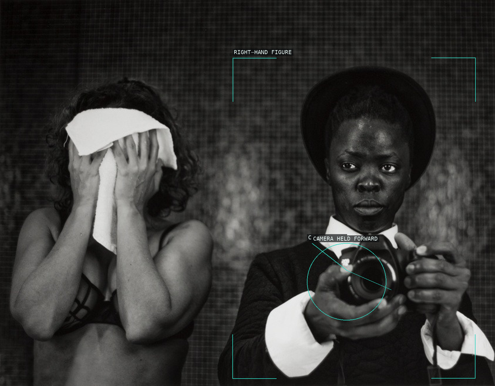
01-zava-amsterdam
Camera and gaze return the viewer’s look.
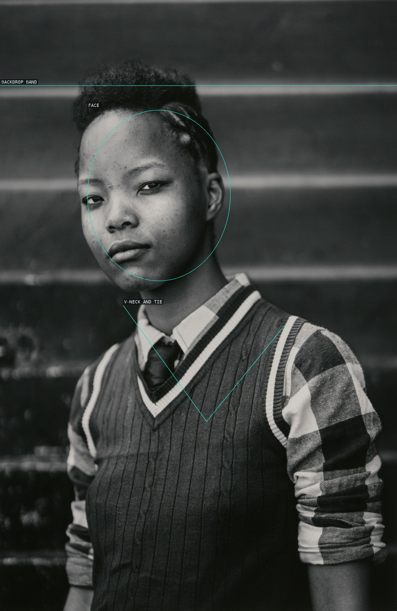
02-tumi-nkopane-kwathema
Face, tie, and V-neck concentrate the tall portrait.
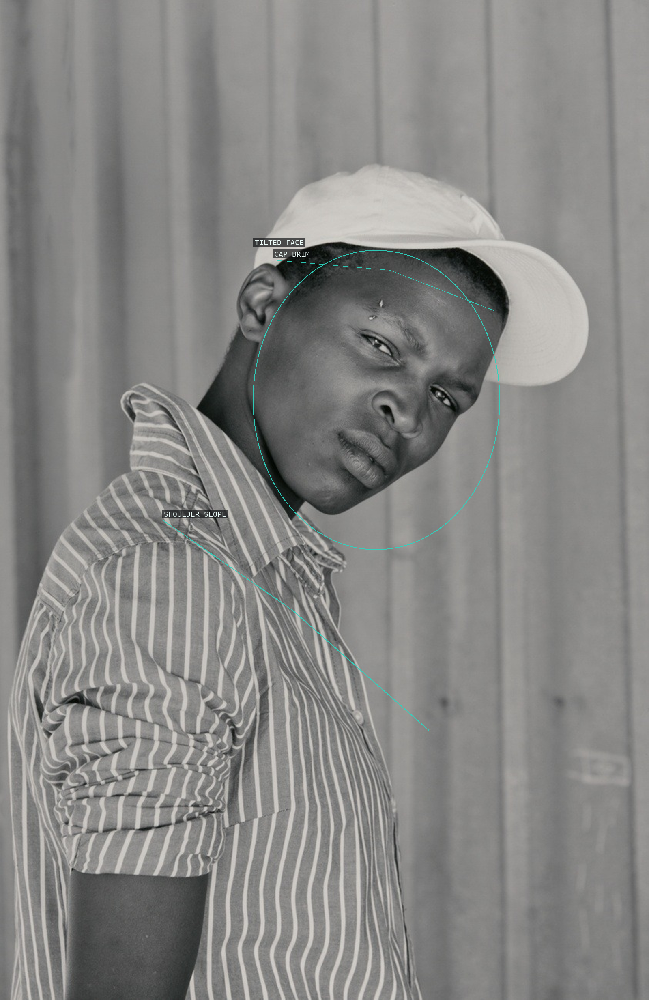
03-ayanda-mqakayi-nyanga-east
Cap brim and shoulder counter the curtain seams.
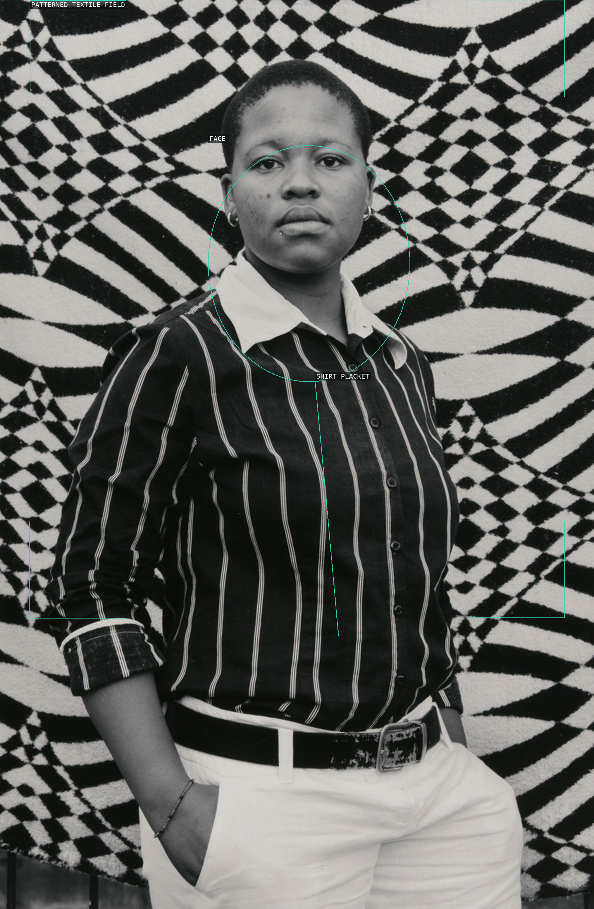
04-bakhambile-skhosana-natalspruit
Face and placket interrupt a textile field.
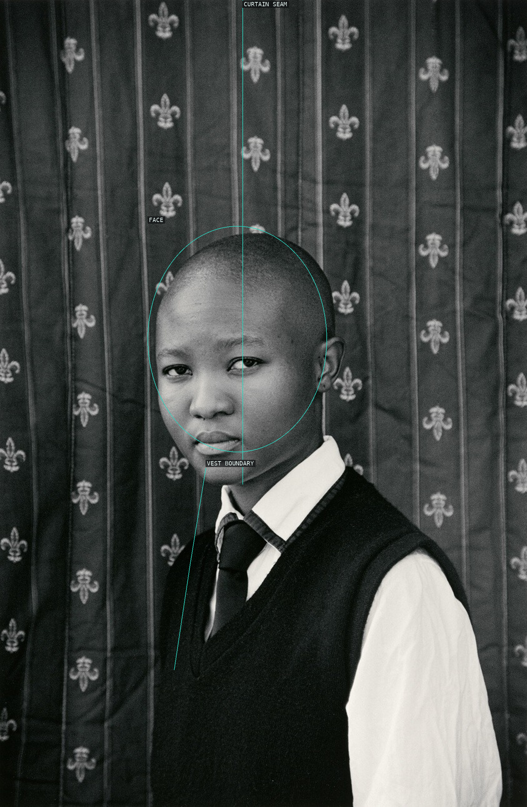
05-refilwe-mahlaba-thokoza
Curtain and vest organize tonal separation.
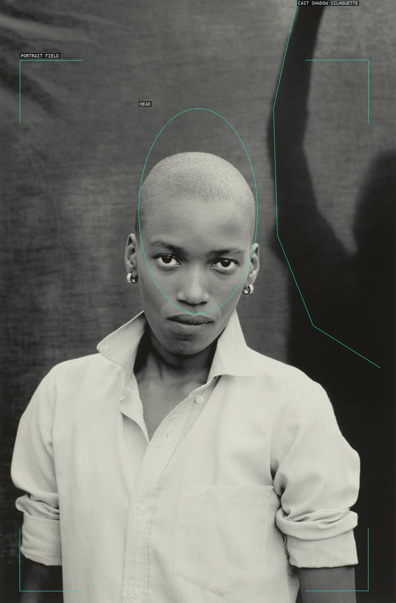
06-nhlanhla-mofokeng-katlehong
Centred gaze meets an asymmetrical shadow.
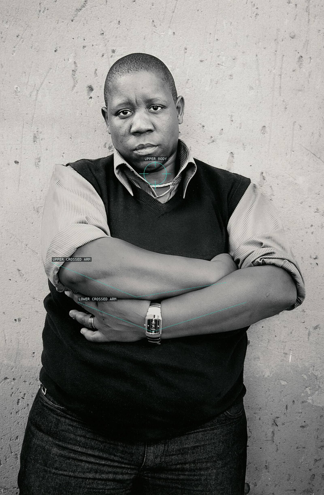
07-matseleng-kgoaripe-vosloorus
Crossed arms become a threshold below the face.
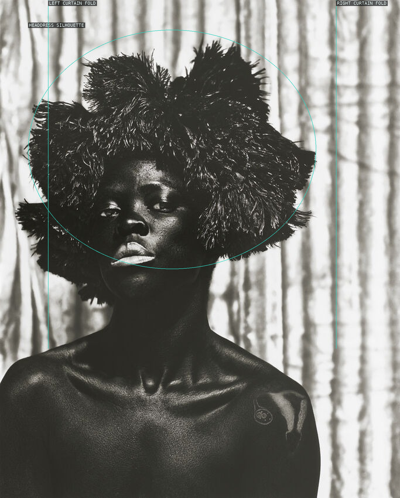
08-faniswa-seapoint-cape-town
Headdress silhouette is bracketed by curtains.
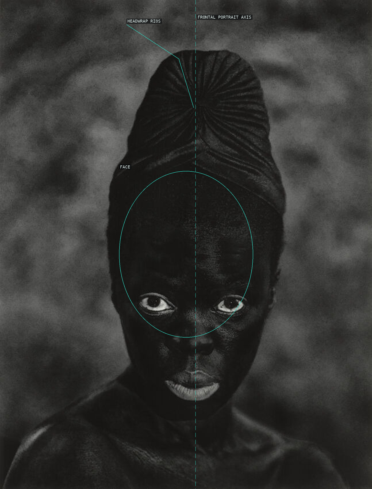
09-sizile-umlazi-durban
Headwrap ribs support a frontal axis.
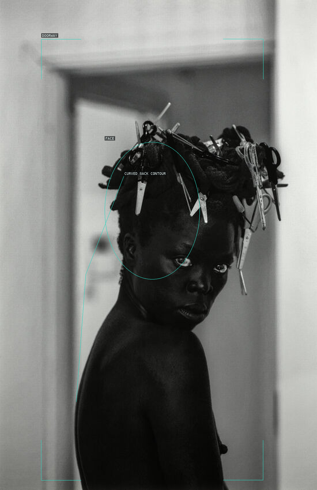
10-sifkile-nuoro-italy
Doorway and back contour hold a turned figure.
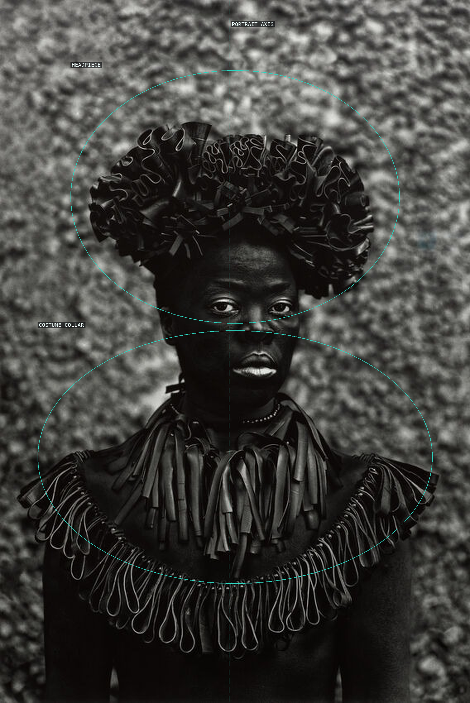
11-hlonipha-cassilhaus
Headpiece and collar frame the face.